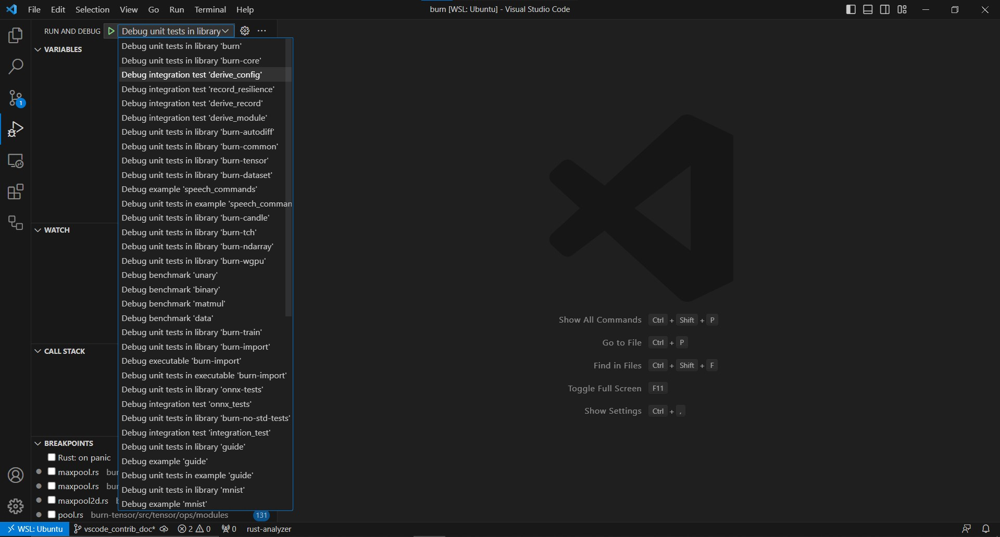

Overview
Welcome to The Mabor Contributor's Book 👋
This book will help you get acquainted with the internals of the Mabor deep learning framework and provide some detailed guidance on how to contribute to the project.
We have crafted some sections for you:
-
Getting Started: Much like the Mabor Book which targets users, we'll start with the fundamentals, guiding you through tasks like setting up the development environment, running tests, and what you should check prior to each commit.
-
Project Architecture: This section will give you an in-depth look at the architecture of Mabor.
-
Guides: We provide some guides on how to do specific tasks, such as adding a new operations to Mabor.
-
Frequently Encountered Issues: If you are running into an issue that has you stumped, this is the section to check out prior to asking on the Discord. It's a collection of errors encountered by contributors, what caused them, and how they were resolved.
As this book is geared towards contributors and not towards users of Mabor, we'll assume you have a good understanding of software development, but will make efforts to explain anything outside of that scope, or at least provide links to resources that explain it better than we can.
How to read this book
Throughout this book, we maintain the following structure.
Linking
When referring to structures or functions within codebase, we provide permalinks to the lines in
specific commits, and indicate them by the relative path of their parent file from the project root.
For example this is a reference to the Tensor struct in
crates/mabor-tensor/src/tensor/api/base.rs
When some reference information is useful but is beyond the scope of contributing to Mabor, we
provide that information in a footnote. To build on the previous example, the Tensor mentioned is
what's referred to as a newtype struct1.
Direct hyperlinks are for tools and resources that are not part of the Mabor project, but are useful for contributing to it. For example, when working on implementing an operation for autodiff, it can be useful to use symbolab to calculate the left and right partial derivatives.
-
For more information on newtype please refer to the Advanced Types chapter of the Rust Book ↩
Getting Started
This section is for setting up the environment and how to do basic development tasks such as running tests and checking your code before committing. If you need help with the process or run into issues, feel free to ask on the Discord server in the Development channels.
Setting up the environment
Depending on what part of the project you plan on contributing to, there are a couple of tools to install and commands to be familiar with. This section should be up to date with current project practices (as of 2024-04-15).
General
There are a few commands you will want to run prior to any commit for a non-draft PR:
-
cargo fmt --allwill runrustfmton all files in the project. -
cargo clippy --fixwill run Clippy and fix any coding issues it can. Clippy necessitates to be in a clean Git state, but this can be circumvented by adding the--allow-dirtyflag. -
cargo run-checksis a command used to test the project. It is required to run successfully prior to merging a PR. Fair warning, running these tests can take a while1.Want more detailed macro error diagnostics? This is especially useful for debugging tensor-related tests:
RUSTC_BOOTSTRAP=1 RUSTFLAGS="-Zmacro-backtrace" cargo run-checks
Updating the mabor semver version
If for some reason you need to bump for the next version (though that should probably be left to the
maintainers), edit the semantic version number in mabor/Cargo.toml, and then run cargo update to
update the lock file.
Contributing to either the Mabor Book or Contributor Book
Both the Mabor Book and the Contributor Book are built with mdbook. To open the book locally, run
mdbook serve <path/to/book> or cargo xtask books {mabor|contributor} open which will install and
use mdbook automatically.
Alternatively, if you want to install mdbook directly, run the following command2:
cargo install mdbook
Also instead of running cargo run-checks, you can run cargo xtask check typos to only check
for misspellings. This will install typo, and if any are
encountered you should be able to run typo -w /path/to/book to fix them.
-
If your system is running into issues with memory and you are on linux, you may want to switch to a virtual console to run the tests. To do this, press
ctrl+alt+f3to switch to a virtual console (and log in), and eitherctrl+alt+f1orctrl+alt+f2to switch back to your graphical session. ↩ -
You might also want to install cargo-update to easily keep your tools up to date, though it is in no way required. ↩
Configuring your editor
These steps are not required, and most of this isn't specific to Mabor, but it's definitely helpful if you haven't already done it.
VSCode
Install the following extensions:
- rust-lang.rust-analyzer for Rust syntax and semantic analysis
- tamasfe.even-better-toml for TOML syntax and semantic analysis
- fill-labs.dependi for managing dependencies
- vadimcn.vscode-lldb for debugging
Setting up the Debugger
To use the debugger, follow these steps:
- Open
Command PalettewithCtrl+Shift+PorF1and typeLLDB: Generate Launch Configurations from Cargo.tomlthen select it, this will generate a file that should be saved as.vscode/launch.json. - Select the configuration from the "run and debug" side panel, then select the target from the list.
Since this repo has
debug = 0in the rootCargo.tomlto speed up compilation, you need replace it withdebug = truein the rootCargo.tomlwhen using a debugger and breakpoints withlaunch.jsonsettings. - Now you can enable breakpoints on code through IDE then start debugging the library/binary you want, like in the following example:

If you're creating a new library or binary, keep in mind to repeat step 1 to always keep a fresh list of targets.
Have another editor? Open a PR!
Testing
Test for Tensor Operations
Test for tensor operations (generally of the form: given this input, expect it match or approximate
this output) are defined only in
crates/mabor-tensor/src/test/ops
and not in the backends (with the exception of mabor-autodiff). The tensor operation tests are
added to the testgen_all macro rule in
crates/mabor-tensor/src/tests/mod.rs.
This is then propagated to the existing backends without any additional work.
Test for Autodiff
Tests for autodiff go under mabor-autodiff/src/tests and should verify backward pass correctness. For binary tensor operations, both the left and right sides need to be verified.
Here's an easy way to define tests for a new operation's backward pass:
- Use small tensors with simple values.
- Pop open a terminal, launch
ipythonand importnumpythen do the calculations by hand. You can also use Google Colab so you don't have to install the packages on your system. - Compare the actual outputs to the expected output for left-hand side, right-hand side.
For float tensors, it is advised to use
actual_output_tensor.into_data().assert_approx_eq::<FLOAT>(&expected_tensor_data, Tolerance::default())
where FLOAT is the floating point types (f32, f64, ...) you are using instead of
assert_eq!(... due to occasional hiccups with floating point calculations.
Project Architecture
This section documents most major architectural decisions with the reasoning behind them.
Sections
Module
Modules are a way of creating neural network structures that can be easily optimized, saved, and loaded with little to no boilerplate. Unlike other frameworks, a module does not force the declaration of the forward pass, leaving it up to the implementer to decide how it should be defined.
Additionally, most modules are created using a (de)serializable configuration, which defines the structure of the module and its hyperparameters. Parameters and hyperparameters are not serialized into the same file, and both are normally necessary to load a module for inference.
Optimization
Optimization is normally done with variants of gradient descent, and it is important to provide an easy API for optimizing modules.
Constraints
- Users should be able to control what is optimized. Modules can contain anything for maximum flexibility, but not everything needs to be optimized.
- Optimizers should have a serializable state that is updated during training. Many optimizers keep track of previous gradients to implement some form of momentum. However, the state can be anything, not just tensors, allowing for easy implementation of any kind of optimizer.
- The learning rate can be updated during training. Learning rate schedulers are often used during training and should be considered as a key aspect.
Solution
In the following, the Module trait is defined in
crates/mabor-core/src/module/base.rs
and the Optimizer trait is defined in
crates/mabor-core/src/optim/base.rs
The solution to this problem comprises multiple parts. Firstly, the Optimizer trait is quite
similar to the Module trait, in terms of saving and loading the state. Please refer to the
serialization section for more details.
Secondly, two traits were created. The Optimizer trait is general and relatively unopinionated,
with a simple step method that takes a learning rate, a module, and the gradients. The other
trait, SimpleOptimizer, aims to provide an easier API for implementing new optimizers. The goal is
to allow implementations to avoid handling missing gradients, loading and exporting records,
navigating the module parameter structure, handling tracked and untracked tensors, and other such
tasks.
Thirdly, each tensor that will be optimized needs to be wrapped into a Param struct, which gives
them an ID used for (de)serialization and to associate the state of the optimizer to each parameter.
The Module trait has two ways to navigate over parameters. The first one is the map function,
which returns Self and makes it easy to implement any transformation and mutate all parameters.
The second one is the visit function, which has a similar signature but does not mutate the
parameter tensors.
SimpleOptimizer
Located in
crates/mabor-core/src/optim/simple/base.rs,
the SimpleOptimizer has two major assumptions:
- The state of the optimizer is linked to each parameter. In other words, each parameter has its own optimizer state, decoupled from the other parameters.
- The state of the optimizer implements
Record,Clone, and has a'staticlifetime.
The benefits of those assumptions materialize in simplicity with little loss in flexibility. The state associative type is also generic over the dimension, making it extremely easy to include tensors in the state that share the same dimensionality as its parameter.
To wrap a simple optimizer into the more general Optimizer trait, the OptimizerAdaptor struct is
used.
OptimizerAdaptor
Located in in
crates/mabor-core/src/optim/simple/adaptor.rs,
the OptimizerAdaptor is a simple struct composed of a SimpleOptimizer and a hashmap with all
records associated with each parameter ID.
When performing an optimization step, the adaptor handles the following:
- Updates each parameter tensor in the given module using the
Module::mapfunction. - Checks if a gradient for the current tensor exists.
- Makes sure that the gradient, the tensor, and the optimizer state associated with the current parameter are on the same device. The device can be different if the state is loaded from disk to restart training.
- Performs the simple optimizer step using the inner tensor since the operations done by the optimizer should not be tracked in the autodiff graph.
- Updates the state for the current parameter and returns the updated tensor, making sure it's properly registered into the autodiff graph if gradients are marked as required.
Note that a parameter can still be updated by another process, as it is the case with running
metrics used in batch norm. These tensors are still wrapped using the Param struct so that they
are included in the module's state and given a proper parameter ID, but they are not registered in
the autodiff graph.
Serialization
An important aspect of a deep learning framework is the ability to save and load models from disk. Despite appearing as a simple feature, it involves numerous constraints that require a proper solution.
Constraints
-
Users should be able to declare the precision of the model to be saved, independent of the backend in use.
The modules should not be duplicated in RAM in another precision to support this. Conversion should be done lazily during (de)serialization.
-
Users should be able to add any field to a module, even fields that are not serializable.
This can include constants, database connections, other module references, or any other information. Only parameters should be serialized since the structure of the module itself should be encapsulated with module configurations (hyperparameters).
-
Users should be able to declare the format in which the module should be saved.
This can involve saving to a compressed JSON file or directly to bytes in memory for
no-stdenvironments. -
Users should be able to create a module with its saved parameters without having to initialize the module first.
This will avoid unnecessary module initialization and tensor loading, resulting in reduced cold start when dealing with inference.
In addition to all of these constraints, the solution should be easy to use.
Solution
In order to be able to add any field to a module without requiring it to be (de)serializable, we decouple the module type from its state. We create a new type for each module that only contains the parameters that need to be saved. To generate that type automatically, the user must either declare which field is a parameter or a constant, or we assume that each field implements the module trait.
The second solution was chosen as it simplifies the code generation and reduces the size of the user
API. This means that the Module trait should be implemented by
primitive types.
The following diagrams highlight the main types and traits used in the solution.
Module Serialization Types

The way the types interact with each other is pretty straightforward. First, a module can be
converted into a record using into_record(). Note that tensors can be cloned, but it won't
actually copy any data; it will simply create another reference to the same data.
Then, a Recorder instance can be used to serialize any record. The Recorder has the
PrecisionSettings type as associate type, so any record will be serialized using the settings
provided at the creation of the Recorder instance. Note that tensors implement record, and their
item is just a wrapper struct that contains information about the precision in which the tensor
should be saved or loaded. No actual copy of the tensor is made until this point. The tensor is
converted to the TensorData struct and then converted into the specified precision only when
serialize() or deserialize() are called, which makes the whole process lazy.
To recapitulate, the Module trait has an associated type that implements Record, which only
contains the parameters of the model. The Record trait has a generic associated type (GAT) that
specifies a family of types that can be (de)serialized given any PrecisionSettings. Records are
therefore decoupled from the backend in use, and the saved items can be loaded on any backend with
any precision, since the conversion is type-safe and done when serialize() and deserialize() are
called. All of the types are generated using simple derive macros without any conditional statements
or complex syntax, as Record and Module are implemented for all primitive types. This makes the
code simple and easy to maintain. In addition, you can extend the current system with your own
Recorder and PrecisionSettings to control how your modules should be saved and loaded.
Pros
- All constraints are respected.
- The code is simple and easy to maintain, with very few conditional statements. It is just recursive data structures, where all the complexity is handled by the framework in primitive implementations.
- The user API is simple and small, with only two derives (
RecordandModule) and no additional attributes. - Users can create their own
ModuleandRecordprimitive types, which gives them the flexibility to control how their data is serialized without having to fork the framework.
Cons
- There are more types, but most of them are automatically generated and single-purpose, so users don't need to interact with them for common use cases. However, they can do so if necessary.
- When instantiating a new record manually, each field must be set to something, even if the type
itself is
(), which represents no value. Since the code generation step uses associative types, it doesn't know that a field type is actually nothing. Creating a record manually without using the generated functioninto_recordor loading it from a file is only useful to load a set of parameters into a module from an arbitrary source. Using the record may not be the optimal solution to this problem, and another API could be created in the future.
Compatibility
Record may become incompatible with previous versions of Mabor, depending on the chosen format. The more compact format (bincode) store minimal information about the type, making it significantly smaller but less resilient to type changes such adding an optional field. At some point, it might be necessary to provide a translation script that can translate a more resilient format from a previous version to a more compact one.
Tensor
A proper deep learning framework should have a fast tensor implementation with autodiff support, and Mabor is no exception. The tensor API abstracts away backend implementation details and focuses on usability without compromising performance. To make it as easy as possible to use, there is only one tensor type, which is different from multiple tensor and deep learning crates in Rust. Generic parameters are used instead to specialize the tensor type.
- B: Backend: The first argument is the backend on which the tensor implementation lies.
- const D: usize: The second argument is the dimensionality of the tensor.
- K: TensorKind: The third argument is the tensor kind, which can be either Float, Int or Bool. By default, the tensor kind is set to Float, so for most tensors, the kind argument is not necessary.
Having one struct for tensors reduces the complexity of the tensor API, which also means less duplicated documentation to write and maintain.
Tensors are thread-safe, which means that you can send a tensor to another thread, and everything will work, including auto-differentiation. Note that there are no explicit in-place tensor operations since all tensor operations take owned tensors as parameters, which make it possible to mutate them. Tensors can be shared simply by cloning them, but if there is only one reference to a tensor, the backend implementation is free to reuse the tensor's allocated data. For more information about how it is done, you can have a look at this blog post.
Tensor Operations
Operations on Tensors (sometimes shortened to Ops) are defined in traits (generally part of the Backend Supertrait) and implemented for the Tensor struct. The appropriate parent trait of an operation depends on the type of operation:
base=> All tensor kinds should implement these operations (reshape, into_data, etc.). The implementation is in crates/mabor-tensor/src/tensor/api/base.rs.numeric=> All tensors that are numeric by nature should implement these operations (Add, Sub, Div, etc.). The implementation is in crates/mabor-tensor/src/tensor/api/numeric.rs.Float=> Tensor operations are only available for float tensors. The implementation is in mabor-tensor/src/tensor/api/float.rs.Int=> Tensor operations are only available for int tensors. The implementation is in mabor-tensor/src/tensor/api/int.rs.bool=> Tensor operations are only available for bool tensors. The implementation is in mabor-tensor/src/tensor/api/bool.rs.
Numeric is directly implemented for Float and Int tensors, and in general, The implementations
for these methods are calling the corresponding {Int|Float} method defined in the backend
supertrait.
Anything that is implemented by numeric should have an implementation in the {Int|Float} traits,
though it may be avoidable if the operation for one type requires casting to the other type. To
provide an example, powf should be implemented for Int tensors, but it should not be an Int
Tensor Operation. The LHS should be converted to a float, and the output should be converted back to
an int. So it's possible to avoid implementing IntTensorOp altogether.
Additionally there are some operations that should be defined as functions instead of tensor op methods. These are:
module => These should be exported as functions instead of methods on tensors. The implementation
is in
crates/mabor-tensor/src/tensor/ops/module.rs.
activation => These should also be exported as functions instead of methods on tensors. The
implementation is in
crates/mabor-tensor/src/tensor/ops/activation.rs.
Note that some activations are just a combination of backend operations and are not declared in
there.
Backend
The Backend trait abstracts multiple things:
- Device type
- Float tensor type
- Bool tensor type
- Int tensor type
- Float element type
- Int element type
- Float tensor operations (kernels)
- Int tensor operations (kernels)
- Bool tensor operations (kernels)
Element types
Warning: there are plans to change this architecture in the near future.
Even though having one type for tensors is convenient for the tensor API, it can be cumbersome when implementing a backend. Therefore, backends can decide, through associated types, what types they want to use for their int, float, and bool tensors. Since float and int can have multiple precisions, the float and int element types are also associated types that must be declared by the backend.
Note that the backend chooses the precision and not the user. Since not all backends will support
the same element types, no assumptions must be made. Therefore, there are no methods on tensors to
change the precision, except for the to_full_precision function, which ensures numerical stability
on the current backend. Backend implementations can provide a way to choose the precision, which can
be accomplished with a generic parameter (e.g. NdArray<f32>).
Operations
To be as general as possible, tensor operations are implemented as plain functions. There is no object or self, just functions that take tensors as input and often return tensors as output as well. Backend implementations are free to use their own patterns to implement these kernels. Note that Mabor is a dynamic graph deep learning framework, so backends may have to implement asynchronous kernel executions for performance reasons.
Autodiff
As of now, there is only one backend decorator that supports autodiff. It follows the decorator
pattern, making any backend differentiable. However, the AutodiffBackend trait abstracts how
gradients are calculated, and other approaches to autodiff might be added later. For more
information about how the current autodiff backend works, you can read this (slightly outdated)
blog post.
Guides for Contributors
The following guides are meant to help contributors accomplish specific tasks, such as adding new operations to Mabor or generating test models for mabor-import.
ONNX to Mabor: Development Guide
This guide offers in-depth design insights and step-by-step procedures for developers working on the ONNX to Mabor conversion tool. This tool allows the importation of ONNX models into the Mabor deep learning framework written in Rust. It converts both ONNX models to Rust source code and model weights to Mabor state files.
For an introduction to ONNX import in Mabor, see this section of the Mabor book.
Design Overview
Design Goals
- Perform best-effort conversion of ONNX models to Rust source code via Mabor APIs.
- Convert ONNX model weights to Mabor state files.
- Support ONNX models generated by PyTorch (ONNX Opset 16).
- Produce easy-to-understand and modifiable models.
- Ensure the generated models are trainable using Mabor APIs.
Design Decisions
- Limit interaction with ONNX to the Intermediate Representation (IR) stage to simplify the process.
- Ensure operator behavior consistency across different OpSet versions.
- Exclude any ONNX/Protobuf-specific logic from the Mabor graph.
The conversion process involves three main stages:
- Convert ONNX model to Intermediate Representation (IR).
- Translate IR to a Mabor graph.
- Generate Rust source code from the Mabor graph.
Adding New Operators
To extend mabor-import with support for new ONNX operators, follow these steps:
-
Create PyTorch Script: Place a PyTorch script using the new operator under
crates/mabor-import/onnx-tests/tests/<op>/<op>.py. Make sure to print both input and output tensors for end-to-end testing. -
Generate ONNX Model: Run the PyTorch script to produce an ONNX model.
-
Visualize ONNX Model: Use Netron to verify the ONNX model contains the expected operators.
-
Generate IR and Mabor Graph: Navigate to crates/mabor-import/ and run:
cargo r -- ./onnx-tests/tests/<op>/<op>.onnx ./out -
Implement Missing Operators: If you encounter an error stating that an operator is unsupported, implement it. The
./out/my-model.graph.txtshould provide relevant information. -
Inspect Generated Files: The
my-model.graph.txtcontains IR details,my-model.rsholds the Mabor model in Rust code, andmy-model.jsonincludes the model data. -
Add End-to-End Test: Include the test in crates/mabor-import/onnx-tests/tests/test_onnx.rs. Further details can be found in the onnx-tests README.
Implementing a New Operator
To extend the capabilities of the Mabor library by supporting new operations imported from ONNX
graphs, developers must go through a few systematic steps. Here, we detail the process, using the
implementation of the Squeeze operation to illustrate points as needed. All file/directory paths
are relative to the root of the mabor repository.
Step 1: Visibility
To make a new operation accessible, there are two key modules to update:
- In
crates/onnx-ir/src/node/mod.rs, add your new operation module to make it visible within the IR - In
crates/mabor-import/src/mabor/node/mod.rs, make the corresponding node type visible within mabor-import
Step 2: Node Implementation
Within onnx-ir
The onnx-ir crate handles the Intermediate Representation (IR) of ONNX models. For each operation:
-
Add the operation to the
NodeTypeenum incrates/onnx-ir/src/ir.rs. -
Create a new module file in
crates/onnx-ir/src/node/<operation_name>.rs. This file should include:- A
<operation_name>_configfunction to extract operation parameters - A
<operation_name>_update_outputfunction for dimension inference
- A
-
If the operation might work with constants, add it to the list of node types checked for constants in
crates/onnx-ir/src/from_onnx.rs.
For example, the squeeze operation is defined in crates/onnx-ir/src/node/squeeze.rs and contains:
- A
squeeze_configfunction that extracts axes from node attributes - A
squeeze_update_outputfunction that updates output dimensions by reducing input rank
Within mabor-import
-
Create a new file named
<operation_name>.rsin thecrates/mabor-import/src/mabor/node/directory. This file will define the structure and functionality of your new operation. By convention, the necessary information for carrying out an operation is encapsulated within a struct named<operation>Node. For theSqueezeoperation, we defined a struct calledSqueezeNodethat holds necessary information about the input tensor, output tensor, and axes for the operation. If implementing a unary or binary operation, please see note below. -
The core of integrating a new operation involves implementing the
NodeCodegentrait for your node. This trait defines how the node generates code during the graph compilation process. The implementation must provide methods to define input and output types, to generate the forward pass code, and to encapsulate the node into the more generalNodestructure. Specifically:output_typesandinput_typesreturn the tensor (or element) types for the output and inputs of the node, respectively.forwardgenerates the Rust code that performs the operation during the execution phase. Thequote!macro is used to generate rust code. Ensure that this is syntactically correct using Mabor code.into_nodewraps the specific node in a generalNodetype, facilitating its inclusion in the broader Mabor graph structure.
-
This file is also where you would put
test_codegen_nodes(), to make sure that the generated code works within the Mabor library.
For unary and binary operations: The implementation of NodeCodegen is mostly implemented in
binary.rs and unary.rs, so each new operation only has to define a method to execute the function on
the input(s) token stream.
Step 3: Registering New Operations
- In
crates/mabor-import/src/onnx/to_mabor.rs, add the operation to the match statement in theinto_mabor()method:
#![allow(unused)] fn main() { impl ParsedOnnxGraph { pub fn into_mabor<PS: PrecisionSettings + 'static>(self) -> MaborGraph<PS> { // ... for node in self.0.nodes { match node.node_type { // ... NodeType::Squeeze => graph.register(Self::squeeze_conversion(node)), // Add your new operation here } } } } }
- Create a conversion function that creates an instance of your Mabor node:
#![allow(unused)] fn main() { fn squeeze_conversion(node: Node) -> SqueezeNode { let input = TensorType::from(node.inputs.first().unwrap()); let output = TensorType::from(node.outputs.first().unwrap()); let axes = squeeze_config(&node); SqueezeNode::new(input, output, axes) } }
This function extracts the necessary information from the ONNX node and passes it to your node's constructor.
Step 4: Create a Config Function
In crates/onnx-ir/src/node/<operation_name>.rs, create a config function that extracts
operation-specific parameters from the ONNX node:
#![allow(unused)] fn main() { pub fn squeeze_config(curr: &Node) -> Vec<i64> { let axes = curr .attrs .iter() .filter_map(|(key, value)| { if key == "axes" { Some(value.clone().into_i64s()) } else { None } }) .next() .unwrap_or_else(Vec::new); match curr.inputs.first().unwrap().clone().ty { ArgType::Tensor(tensor) => tensor, _ => panic!("Only tensor input is valid"), }; axes } }
This config function is responsible for parsing the ONNX node attributes and extracting operation-specific parameters. In this case, it extracts the "axes" attribute from the squeeze operation.
Step 5: Rank Inference
In crates/onnx-ir/src/node/<operation_name>.rs, implement a rank inference function that updates
the output rank based on the operation:
#![allow(unused)] fn main() { pub fn squeeze_update_output(node: &mut Node) { // Extract axes information let axes = /* ... */; let input_rank = /* ... */; let output_rank = input_rank - axes.len(); // Update output rank node.outputs[0].ty = ArgType::Tensor(TensorType { elem_type: node.inputs[0].ty.elem_type().clone(), rank: output_rank, static_shape: None, }); } }
Then register this function in crates/onnx-ir/src/rank_inference.rs by adding it to the match
statement:
#![allow(unused)] fn main() { pub fn rank_inference(node: &mut Node) { match node.node_type { // ... NodeType::Squeeze => squeeze_update_output(node), // Add your new operation here } } }
The rank_inference.rs file is responsible for determining the output tensor rank for each node in
the graph.
If the rank remains unchanged, you can use helper functions like same_as_input() or
same_as_input_broadcast() instead of writing a custom update function.
Step 6: Integrate into the Graph Building Process
When a new node type is introduced, it must be added to the Node<PS: PrecisionSettings> enum in
crates/mabor-import/src/mabor/node/base.rs and the match_all! macro in the same file.
The Node enum abstracts over different types of operations (nodes) within a network graph. Each
variant of the enum corresponds to a specific type of operation and encapsulates the
operation-specific data structures (like SqueezeNode) that were defined in step 2.
Step 7: Add Newly Supported Op!
As a reward, add an extra check to crates/mabor-import/SUPPORTED-ONNX-OPS.md!
Lifting Constant Nodes
If your operation takes inputs from constant nodes (such as weights in Conv1d, shape tensors in
Reshape, etc.), you need to add your operation's NodeType to the LIFT_CONSTANTS_FOR_NODE_TYPES
array in crates/onnx-ir/src/from_onnx.rs.
#![allow(unused)] fn main() { const LIFT_CONSTANTS_FOR_NODE_TYPES: [NodeType; 16] = [ NodeType::BatchNormalization, // other operations... NodeType::Squeeze, NodeType::Unsqueeze, // Add your operation here if it needs constants to be processed ]; }
"Lifting" constants means converting Constant nodes into direct input values. This is similar to how ONNX initializers work. For example, instead of having a separate Constant node providing weights to a Convolution operation, the weights are directly embedded as values in the Convolution node's inputs.
This transformation makes it easier to:
- Access the constant values during node configuration
- Process operations like Conv1d that expect weights as direct inputs
- Handle shape-defining inputs needed for operations like Reshape
Without this, operations that need to extract configuration from constant inputs (such as shapes, weights, or other parameters) would not work correctly because they wouldn't have direct access to those constant values.
Testing
When implementing a new operator, there are several levels of testing to consider:
Unit Testing
-
Node Configuration: Write unit tests for the
<operation_name>_configfunction incrates/onnx-ir/src/node/<operation_name>.rsto verify that it correctly extracts parameters from ONNX nodes. -
Rank Inference: Test the
<operation_name>_update_outputfunction to ensure it correctly computes output ranks. -
Code Generation: Test the Node implementation in
mabor-importto verify that it generates correct Rust code.
Integration Testing
- Create small ONNX models that use your operator and test the end-to-end conversion process
- Ensure the generated Rust code compiles and produces the expected outputs
- Add these tests to
crates/mabor-import/onnx-tests/tests/test_onnx.rs
End-to-End Testing
- Test with realistic ONNX models that use your operator in conjunction with others
- Verify that inputs and outputs match between the original ONNX model and the converted Mabor model
- Include models that test edge cases (e.g., different input shapes, parameter combinations)
Testing both the rank inference and node configuration is particularly important as these components directly affect the correctness of the conversion process. Incorrect rank inference can lead to mismatched tensor shapes, while incorrect configuration can cause runtime errors or incorrect results.
Resources
Adding a New Operation to mabor
Let's discuss how one might go about adding new operators to Mabor, using the example of the pow operator added in this PR.
Adding the Op to mabor-tensor
mabor-tensor is the crate that defines all tensor operations that need to be implemented by the
various backends. The core of this lies in
crates/mabor-tensor/src/tensor/api/numeric.rs,
which is home to the numeric trait and its implementation for the different tensor types. The
numeric trait is the home of all tensor operations that are numeric in nature and that are shared by
Int and Float Tensor types. More information on the relationship between Tensor modules can be
found under the section for Tensor Architecture.
Here is where pow was added to crates/mabor-tensor/src/tensor/api/numeric.rs:
- for the
Tensor<Backend, Dimension, Kind>struct - for the numeric trait
- for the implementation of numeric for float and int
Tensor is a struct that has a single member: primitive (defined
here),
that is defined by its
Kind:
one of Bool, Float, or Int (those linked in 3). These call the ops for that data type defined
in the
Backend
supertrait1. This is the trait that is then implemented by the different mabor-
backends (such as mabor-ndarray and mabor-wgpu) which must implement the functions if no default
is provided.
In this case, we don't need to worry about Bool Tensors. Float ops are implemented under
crates/mabor-tensor/src/tensor/ops/tensor.rs,
and Int ops under
crates/mabor-tensor/src/tensor/ops/int_tensor.rs.
The current convention is ops of each type, if not unique to that type, are prefixed with the type.
So powf and sundry would be defined as int_powf for IntTensorOps and float_powf for
FloatTensorOps. If an op is unique to a type, then it should be implemented under
mabor-tensor/src/api/{type}.rs. For example, here is an implementation for
sin under crates/mabor-tensor/src/api/float.rs
which obviously doesn't make sense for Int or Bool tensors.
The Int Tensor function uses the ones defined for Float with 2 extra casts (LHS to a Float
tensor, Output to an Int). Given that the rest of the code will only look at the float
implementations.
With the addition of quantized float tensors, the Float tensor primitive is represented by the
TensorPrimitive
enum. This allows us to handle both float and quantized float operations in the Tensor
implementation, correctly dispatching to the corresponding op (float or quantized) based on the
variant. Following the same convention, the equivalent
quantized tensor ops
are prefixed with q_* (e.g., q_reshape instead of float_reshape). Most ops have a default
implementation that simply dequantizes the input into its floating-point representation, performs
the operation on the float tensor, and quantizes the output. Backends can overwrite specific
implementations when required/desired.
Adding Tests
Additional Tests should be added to mabor-tensor under
crates/mabor-tensor/src/tests/ops/{op_name}.rs,
inserting the module name into crates/mabor-tensor/src/tests/ops/mod.rs. Then add it to the
testgen_all macro under crates/mabor-tensor/src/tests/mod.rs. This macro is called from the
lib.rs file in each backend, which autogenerates the tests for that specific backend. It isn't
necessary to define tests in the backends directly, save for those that require specific testing
such as mabor-autodiff.
For float tensor operations, the
QTensorOps
counterpart is usually added at the same time with a default implementation (as mentioned in the
previous section). Tests for q_* ops follow a similar procedure: the test is added under
crates/mabor-tensor/src/tests/quantization/ops/{op_name}.rs,
the module name is inserted into crates/mabor-tensor/src/tests/quantization/ops/mod.rs and finally
the test is added to the
testgen_quantization macro.
If you take a look at any of the existing tests for an operation on a quantized tensor,
you will see that the inputs and expected outputs are always defined with floating point values.
While it assumes that the quantization and dequantization are correct, it makes the tests much more
readable and easier to understand w.r.t. what is being tested. Effectively, the tests are there to
ensure that a tensor operation is invariant to quantization (up to some quantization error, of
course).
Note: the tests try to use tensors with floating point values which can be de/quantized without introducing too much quantization error, but the result always depends on the operation (e.g., tensor product of values can grow larger and significantly increase the output tensor range, leading to more de/quantization error on the results).
Adding the Op to mabor-autodiff
Since this is probably the hardest and the least straightforward, we'll cover this backend
separately. mabor-autodiff enables other backends to use autodifferentiation2. Ops for
float types are implemented in
crates/mabor-autodiff/src/ops/tensor.rs
and need to:
- Define a unit struct 3 that implements a backward (pass) function
- Within the backward function, as this is an elementwise binary operation it implements the binary
function (from
backward.rsunder the same directory), the last 2 arguments are two closures that define the left and right partial derivatives. - Then define what happens when a specific operation is tracked or untracked, where untracked just calls the function in the normal way, and tracked sets the execution the backward function defined above.
- When tracked, operations are part of the autodiff graph and must save the needed information to efficiently perform their backward pass later. If the information is light (such as a shape), it should be directly saved in the state. If the operation's inputs are needed to compute the backward pass, it should be checkpointed rather than saved. This will allow the input to be provided lazily at the backward pass depending on the checkpointing strategy.
- An operation must also be identified as compute-bound (
.computeBound()) or memory-bound (.memoryBound()) for gradient checkpointing. Compute-bound operation are heavy to compute (for instance matmul or convolution), which means that even with checkpointing they will save their output for the backward pass and not recompute it. Memory-bound operations are more trivial (likepowfwhich only performs one small operation per tensor entry), so it can be beneficial to recompute them during the backward pass instead of saving their whole forward output to memory. Operations registered as memory-bound need to know their parents (.parents()method) and how to recompute their forward pass during the backward pass (with a struct that implementsRetroForward), using their parents' outputs.
The above steps are mostly boilerplate, so you can often just copy the contents of another similar op, change the name of the structs, and ensure that either both sides have the data they need (if they need to have a copy of the opposite sided tensor, clone its contents).
Computing derivatives
For those that need it, here is a quick refresher on the necessary calculus. If you are familiar with how to calculate partial derivatives, you can skip this section.
Since pow is a binary operation, the left and right functions are the partial derivatives with
respect to the left and right sided tensors.
Let's define the operator as a function \(f(x,y)=x^{y}\) , where \(x\) is the left hand tensor and \(y\) is the right handed tensor. The two closures are defining the partial derivatives of \(f\) with respect to \(x\),\(y\). Treat the other variables as a constant
$$\frac{\delta }{\delta x} (x^{y})= y \cdot x^{y-1}$$ is the left handed closure, and
$$\frac{\delta }{\delta y} (x^{y}) = x^{y} \cdot ln(x)$$
is the right. If you aren't sure how to calculate these by hand, it is recommended to use symbolab, plug in your operator in terms of \(x\) and \(y\), and just swap out the variable \(x\)|\(y\) in the partial derivative to get the other side.
Testing autodiff
For testing the autodiff operations, please refer to
this section.
Adding the Op to other backends
Most of these are fairly straightforward implementations. For reference here's pow's float implementation for torch, ndarray and candle backends:
- Torch implementation in crates/mabor-tch/src/ops/tensor.rs and the Op used in crates/mabor-tch/src/ops/base.rs
- NdArray in crates/mabor-ndarray/src/ops/tensor.rs
- Candle in crates/mabor-candle/src/ops/tensor.rs
This is where any calculation happens currently. Playing a guessing game with method names and seeing what completions are suggested will take you far. If you are having trouble figuring out how to do it from the docs for that backend, try searching github for relevant function calls.
Adding the Op to fusion, JIT and cubecl backends
Adding an operator to these backends can be fairly straightforward, though due to what these backends are for, involves a bit more indirection. Fusion and jit, like autodiff, are not target backends as much as backends that enable certain functionality for other backends, in this case kernel fusion or just-in-time compilation. Adding the operator won't involve doing any calculation, you'll just be describing how the generated code should look. Most of this can be copy/pasted/adjusted from other functions.
Here's how powf was added to mabor-fusion:
- Added powf to the float ops under
crates/mabor-fusion/src/ops/float.rs - Added powf to the
NumericOperationIrenum under crates/mabor-fusion/src/stream/operation.rs - Added powf to the implementations of
NumericOperationIrenum under crates/mabor-fusion/src/stream/context.rs
The way cubecl handles tensor-scalar operations is by transforming both into a sequence of
vectorized scalar operations. Since powf already existed in cubecl, it was pretty easy to reuse
the existing implementation for the situation where both sides of the operation were tensors. The
cubecl crate is primarily concerned with how the operation is compiled and executed by the gpu.
The actual implementation is defined in mabor-cubecl.
Here is where code was added for powf in mabor-cubecl and cubecl:
- to the implementation of
FloatTensorOpsundercrates/mabor-cubecl/src/ops/float_ops.rs - the function being called was added to crates/mabor-cubecl/src/ops/numeric.rs
- the operator was defined in
cubecl-core/src/ir/operation.rs - how the operation looks to the gpu was added to
crates/mabor-cubecl/src/fusion/on_write/ir.rs - the mappings between the gpu operation and the CPP, WGSL and SPIR-V instructions were added to
cubecl-cpp/src/shared/base.rs,cubecl-wgpu/src/compiler/wgsl/compiler.rsandcubecl-spirv/src/instruction.rs - the instructions themselves were added for WGSL to
instruction op enum in
cubecl-wgpu/src/compiler/wgsl/instructions.rs, and the actual instruction in wgsl here, for CPP in the enum herecubecl-cpp/src/shared/instruction.rsand the actual instruction herecubecl-cpp/src/shared/binary.rs
We needed to generate some custom WGSL code for powf in WGSL, primarily due to issues with proper
case handling of the wgsl pow function, like 0 to the 0 power being 1, and any negative number to an
even power being positive. We reused as much as the existing logic as possible, and then branched at
the last point based off the var type of the rhs.
See here.
For most operations, you shouldn't need to add to cubecl-wgpu/src/compiler/wgsl/extension.rs
unless the operation isn't native to WGSL.
For functions that need a complex kernel without a direct mapping to a base instruction, simply use
the cube macro (see
the cubecl book).
Adding the Op to mabor-import
Generating the ONNX test files or tests is already covered in the ONNX to mabor guide; this is more about the specific changes you need to make when adding new operators after you have generated the tests.
Changes will need to be made to both onnx-ir and mabor-import. The code within onnx-ir defines
how to parse the nodes in an onnx file and produces the intermediate representation. The code within
mabor-import is divided into two sections: src/onnx and src/mabor. The code under the former
maps that intermediate representation to one used for code generation and the latter defines how to
generate code for the operator you've implemented earlier in this guide.
So when you are loading a model, the operator is first parsed to an intermediate representation
defined by mabor-import and then mapped to a Mabor operation defined under src/mabor/node; the
mapping from onnx to mabor is aptly defined in src/onnx/to_mabor
Let's review the changes made for powf starting from src/mabor and moving to src/onnx:
- Determine the type of operator and add your operator to the appropriate node (operation) type, in
this case
BinaryNode under
crates/mabor-import/src/mabor/node/binary.rsalong with itsas_strdefinition - Add an arm to the match statement inside the
into_maborfunction in crates/mabor-import/src/onnx/to_mabor.rs for the ONNXNodeType(which corresponds to an op in the ONNX spec), and make an{op}_conversionfunction that maps the ONNX node to the binary type - Specify how dimensions for the output should be derived in crates/onnx-ir/src/rank_inference.rs
And you're done! Congrats, you just fully added a new operation to mabor, and we are all one step closer to the answer to Are we learning yet? being "Yes, and it's freaking fast!". Buy yourself a coffee.
-
for more on supertraits see the advanced trait section of the rust book ↩
-
wiki link for automatic differentiation ↩
-
for more information on unit structs see the defining and instantiating structs section of the rust book ↩
Submitting Examples to Mabor
This guide explains how to create and submit new examples to the Mabor repository. Examples are a great way to demonstrate Mabor's capabilities and help users understand how to use the framework effectively.
For a minimal working example, see the simple-regression example in the repository.
Repository Structure
The Mabor repository is set up as a workspace, with examples located in the examples/ directory. Each example is a separate crate that can reuse workspace dependencies.
Creating a New Example
-
Navigate to the examples directory:
cd examples -
Create a new library crate:
cargo new --lib <my-example> -
Update the example's
Cargo.toml:[package] name = "<my-example>" version = "0.1.0" edition = "2021" readme = "README.md" # Remove this line if it exists # readme.workspace = true [dependencies] # Reuse workspace dependencies when available serde = { workspace = true } # Add example-specific dependencies mabor = { path = "../../" }
Required Files and Structure
README.md
Each example must include a README.md file with:
- A brief description of what the example demonstrates
- A terminal command showing how to run the example
- Any prerequisites or setup instructions
Example README structure:
# Example Name
Brief description of what this example demonstrates.
## Running the Example
```bash
cargo run --example <my-example>
```
## Prerequisites
List any prerequisites here.
Source Code Structure
src/directory: Contains the main implementation codeexamples/directory: Contains example code<my-example>.rs: Example implementation
Resource Handling
- Resources (datasets, models, etc.) should be downloaded in the example code
- Do not track external files in the repository
- Include code to download and prepare resources when the example is run
Best Practices
-
Code Organization
- Keep the code modular and well-documented
- Use clear, descriptive variable and function names
- Include comments explaining complex operations
-
Error Handling
- Implement proper error handling
- Provide meaningful error messages
- Handle resource download failures gracefully
-
Performance
- Optimize for reasonable execution time
- Include progress indicators for long-running operations
- Consider adding configuration options for different hardware capabilities
-
Documentation
- Document all public APIs
- Include inline comments for complex logic
- Explain any non-obvious implementation details
Submitting Your Example
- Ensure your example follows all the guidelines above
- Test your example thoroughly
- Create a pull request with:
- A clear description of what the example demonstrates
- Any relevant issue numbers
- Screenshots or output examples (if applicable)
Feel free to ask questions in the pull request if you need clarification or guidance.
Frequently Encountered Issues
This is a collection of issues people have encountered and asked about on the Discord server. This section is separated from the guides since it can involve lots of details that are only relevant to a small subset of contributors.
Issues encountered while adding ops
Below are some of the issues that were encountered while adding ops to the project. If you encounter an issue while adding an op that isn't listed here, and it's not obvious how to fix it, you can add it to this list or reach out on the Discord server if you need help.
Off by .000001 errors
---- fusion::base::tests::maxmin::tests::test_mean_dim_2d stdout ---- thread 'fusion::base::tests::maxmin::tests::test_mean_dim_2d' panicked at mabor-wgpu/src/fusion/base.rs:185:5: assertion `left == right` failed left: Data { value: [1.0, 4.0], shape: Shape { dims: [2, 1] } } right: Data { value: [0.99999994, 3.9999998], shape: Shape { dims: [2, 1] } } ----
tests::maxmin::tests::test_mean_dim_2d stdout ---- thread 'tests::maxmin::tests::test_mean_dim_2d' panicked at mabor-wgpu/src/lib.rs:49:5: assertion `left == right` failed left: Data { value: [1.0, 4.0], shape: Shape { dims: [2, 1] } } right: Data { value: [0.99999994, 3.9999998], shape: Shape { dims: [2, 1] } }
If you encounter this, swap out the assert_eq! in the failing test for
tensor1.to_data().assert_approx_eq with 3 as the second argument. The second arguments specifies
the level of precision: 3 is equivalent to a less than 10-3 (0.001) difference between
the elements of the two tensors.
Mismatched types and missing functions
error[E0308]: mismatched types --> {mabor_dir}/target/debug/build/onnx-tests-fed12aaf3671687f/out/model/pow.rs:48:45 | 48 | let pow1_out1 = input1.clone().powf(input1); | ---- ^^^^^^ expected `f32`, found `Tensor<B, 4>` | | | arguments to this method are incorrect | = note: expected type `f32` found struct `Tensor<B, 4>`
note: method defined here --> {mabor_dir}/mabor-tensor/src/tensor/api/float.rs:65:12 | 65 | pub fn powf(self, value: f32) -> Self { | ^^^^
error[E0599]: no method named `powf_scalar` found for struct `Tensor` in the current scope --> {mabor_dir}/target/debug/build/onnx-tests-fed12aaf3671687f/out/model/pow.rs:50:35 | 50 | let pow2_out1 = pow1_out1.powf_scalar(cast1_out1); | ^^^^^^^^^^^ method not found in `Tensor<B, 4>`
error[E0599]: no method named `powi` found for struct `Tensor` in the current scope --> {mabor_dir}/target/debug/build/onnx-tests-fed12aaf3671687f/out/model/pow_int.rs:49:40 | 49 | let pow1_out1 = input1.clone().powi(input1); | ^^^^ method not found in `Tensor<B, 4, Int>` Some errors have detailed explanations: E0308, E0599.
For more information about an error, try `rustc --explain E0308`. error: could not compile `onnx-tests` (test "onnx_tests") due to 3 previous errors
If you are getting this error, you probably didn't implement your operator for the actual Tensor
struct. This issue was encountered when adding the Pow operator. The operation was added to the
FloatTensorOps and IntTensorOp traits, but not for the numeric trait (under
mabor-tensor/src/tensor/api/numeric.rs). This, coupled with powf existing prior to the PR though
only for scalar values (which had been renamed, just not in the right place), led to this confusing
issue where it looked like the function was found, but the type was wrong. If that's the case, make
sure that it's implemented for the appropriate type, in this case Float under
crates/mabor-tensor/src/tensor/api/numeric.rs,
and calling the TensorOp.foo_op defined under
crates/mabor-tensor/src/ops/tensor.rs